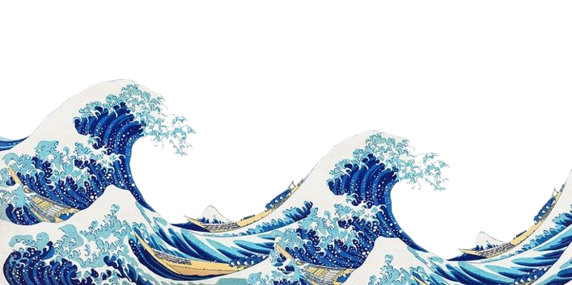
A short description
~
Welcome to “Exploring the Solar System”, an immersive and educational website designed to take you on a
fascinating journey through our cosmic neighborhood. Discover the eight planets in detail, from the scorching,
cratered surface of Mercury to the gas giant Jupiter with its swirling storms, and the icy, distant world of
Neptune. Learn about moons, asteroids, comets, and the Sun, which provides the essential energy that powers
life and governs planetary motion. Our website offers vivid images, interactive diagrams, and engaging
explanations that make complex astronomical concepts accessible to students, space enthusiasts, and curious
minds of all ages. Explore the unique characteristics of each planet, their orbits, atmospheres, and
geological features. Dive into interactive simulations, orbital models, and quizzes to deepen your
understanding while having fun. Stay updated with the latest space missions, discoveries, and scientific
research that reveal the wonders of our universe. Whether for learning, school projects, or pure curiosity,
“Exploring the Solar System” provides a captivating,
informative, and interactive experience that inspires awe
and encourages a deeper appreciation for the planets and celestial
phenomena that surround us.
The Celestials web-world includes a lot of other aspects. The home-page includes topics like
“Space Exploration, space Fundamentals,
Leading Space Agencies, Popular Missions,
AstroPhysics and Aerospace Enineering and one of the most important and fundamentals
of our existence of universe, Plasma" and etc-etc... I have tried to include the major amount of
scientific concepts in this "Web-world of Celestials"! Hope my viewer is delighted!
Space Exploration
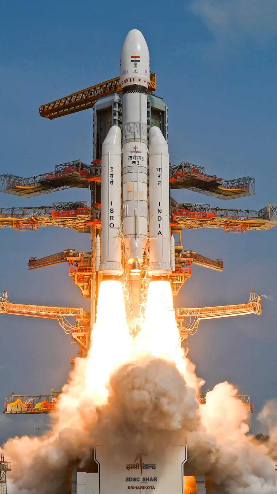
ISRO space shuttle for chandryan3 mission
~ Space Explorationhas been one of the fundamentals of human curiosity. Space exploration has been one of the scientific innovations of human history. After thousands of years of evolovation, humans has achevied the guts entering the space, outside of the atmosphere of our home planet. Space Exploration is the scientific and technological effort to explore outer space beyond Earth’s atmosphere in order to understand the universe and humanity’s place within it, and it represents one of the greatest achievements of human curiosity and intelligence; beginning with early telescopic observations and advancing to satellites, space probes, space stations, and crewed missions, space exploration has enabled humans to study distant planets, stars, galaxies, and cosmic phenomena that cannot be examined from Earth alone, leading to groundbreaking discoveries such as the structure of the solar system, the behavior of black holes, and the possibility of habitable environments beyond our planet; it has also driven immense technological progress, producing innovations in communication, navigation, materials science, medicine, and computing that directly benefit everyday life on Earth; beyond science and technology, space exploration carries philosophical and inspirational value, encouraging international Corporation, long-term thinking, and a deeper appreciation of Earth as a fragile, shared home; as modern missions focus on Mars exploration, space telescopes, asteroid studies, and the search for extraterrestrial life, space exploration continues to push the limits of human capability, transforming imagination into reality and shaping the future of civilization through knowledge, innovation, and the relentless pursuit of the unknown.
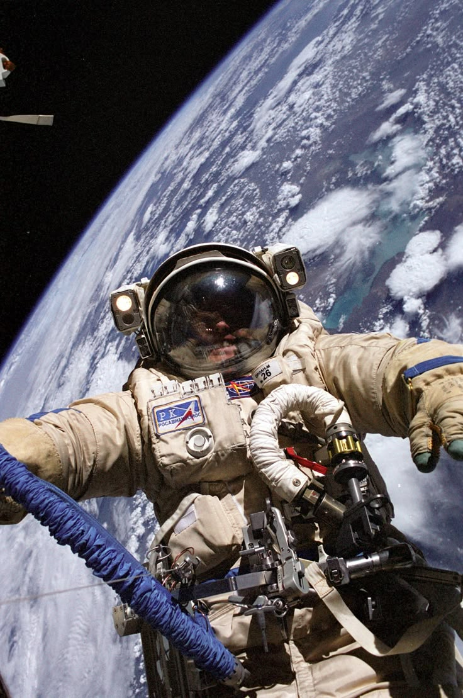
ORLEN spacesuit. A Russian EVA suit, used for spacewalk
Space Fundamentals
~ Space Fundamentalsrefer to the basic concepts that help us understand the universe beyond Earth, including the nature of space, matter, energy, and the laws that govern celestial motion; outer space is a near-vacuum where gravity dominates large-scale interactions, shaping the formation of stars, planets, galaxies, and entire cosmic structures; fundamental forces such as gravity, electromagnetism, and nuclear interactions control how celestial bodies are born, evolve, and interact over time; space also follows predictable physical laws, including orbital mechanics, which explain why planets revolve around stars and satellites remain in stable paths; light and other electromagnetic radiation serve as primary sources of information about distant objects, allowing scientists to study temperature, composition, and movement across vast distances; time, space, and gravity are deeply interconnected, as described by modern physics, influencing how objects behave under extreme conditions; understanding these fundamentals forms the foundation of astronomy, astrophysics, and space exploration, enabling humanity to decode the universe systematically and scientifically.
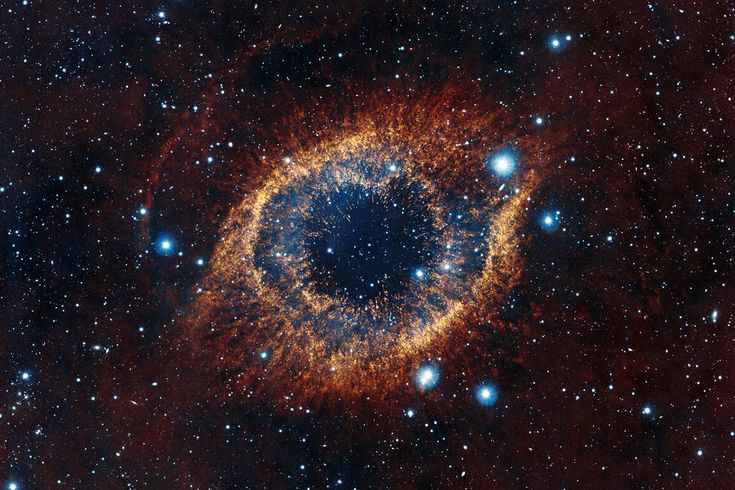
NEBULA: A vast gas cloud, from supernova explosion
~ Space Fundamentalsinvolve the basic principles governing the universe, including gravity, motion, energy, and matter; space is a near-vacuum where gravity shapes stars, planets, and galaxies, distances are measured in light-years, and information is carried by electromagnetic radiation, allowing scientists to study cosmic structures and their evolution scientifically.
Space Agencies
~ The world's leading Space Agencies are becoming the backbone international space missions and space exploration. They are currently leading the major scientific exploration. Space organization are the bodies that are performing the works, that were once considered impossible for human acheivements. Space organization are not just buildings with hi-fy structural units but when the brilliant minds joins together in a building, makes a space organization on its own.
There have been at least 6 major planned missions from just NASA, ESA and ISRO and other private private
partners like "spaceX".
Space Agencies could be of 5 types. These are:
- 1.Government Space Agencies:
- National organizations funded by governments that handle major space missions, research, and policy, such as NASA, ISRO, ESA, Roscosmos, CNSA, and JAXA. Examples: NASA(American space agency) and ISRO(Indian space agency).
- 2. Private Space Agencies:
- Profit-driven organizations focused on launches, satellites, tourism, and innovation, like SpaceX, Blue Origin, and Rocket Lab. Examples: SpaceX and Blue Origin.
- 3. International or Collavorative space organziations:
- Multinational bodies formed by multiple countries to work together, such as ESA or the International Space Station partnership. Examples: ESA(European Space Agency).
- 4. Research & Academic Institutions:
- Universities and research centers conducting space science, astrophysics, and technology development. Examples: "Jet propulsion Laboratory" and "Indian Institute of Aestrophysics"
- 5. Defffence and Milllitary space organizations:
- Agencies managing satellites for navigation, surveillance, and national security. Examples: "United states space force"(American) and "Deffence Space Agency"(Indian).
~
So space agencies or say organizations are not onyl for space exploration but also for
Military and defence, Communications,
and also for academic research purposes. Thus showcasing the importance of such
bodies and agencies.
Below these are 5 of the most popular space agencies(Governmental):
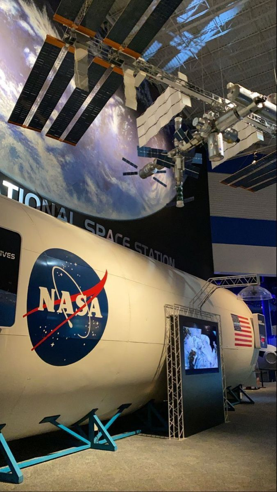
NASA: ISS and space engine showcase model
NASA; National Aeronotical Space Agency
NASA is the United States’ civil space agency, responsible for space exploration, aeronautics
research, and space science. It designs spacecraft, launches satellites, studies Earth and
distant planets, and conducts human spaceflight missions like Apollo, Space Shuttle, and
Artemis, advancing technology, scientific knowledge, and humanity’s understanding of the
universe through innovation, international collaboration, education, inspiration, discovery,
leadership, and future exploration efforts.
ISRO; Indian Space Research Organisation
ISRO (Indian Space Research Organisation) is India’s national space agency, responsible for
space exploration, satellite development, and launch services. It designs launch vehicles like
PSLV and Gaganyaan, conducts planetary missions such as Chandrayaan and Mangalyaan, and
applies space technology for communication, navigation, weather forecasting, disaster
management, and national development.
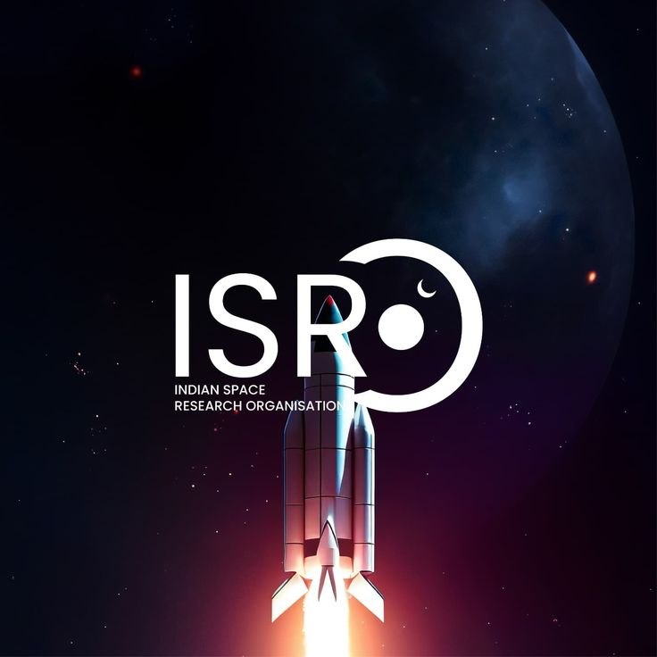
ISRO,"Think India"
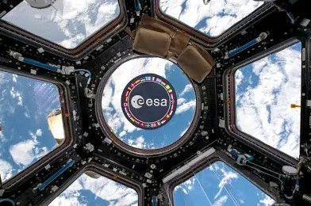
Inside ISS; main window sheald of ISS
ESA; European Space Agency
ESA (European Space Agency) is an intergovernmental organization uniting multiple European
nations to explore space collaboratively. It develops satellites, launch systems, and
scientific missions, contributes to the International Space Station, studies Earth and deep
space, and advances astronomy, planetary science, navigation, climate monitoring, and
technological innovation for peaceful purposes.
ROSCOMOS; Russian State Space Corporation
Roscosmos is Russia’s national space corporation, responsible for spaceflight, satellite
systems, and space science. It inherits the legacy of the Soviet space program, operating
launch vehicles and spacecraft like Soyuz, supporting the International Space Station,
conducting planetary research, and maintaining navigation, communication, and Earth-observation
satellites.
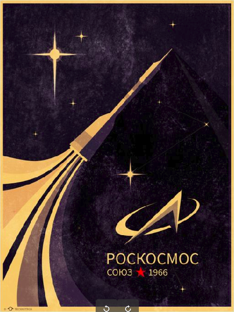
ROSCOSMOS; In russian it stands for "State corporation
for space activities" and in english, its- "Russian state space corporation"
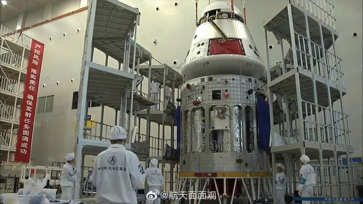
Shenzhou program; component- Reentry capsule; built-date- around 2022 to 2024
CNSA; China National Space Administration
CNSA stands for China National Space Administration, and it is China’s civil space authority
responsible for national space policy, planning, and international cooperation. CNSA oversees
robotic and human space exploration, lunar and Mars missions, satellite programs, and launch
activities, advancing scientific research, technological capability, and long-term space
development goals.
Popular Missions
~
We have doen a lot of space missions throughout the human exploration of space and undrstanding of the space.
successful space missions are the main aspect of acheiving and understanding this vast universe.
And among all of these, the listed Popular space Missions have acheived
the most in this world. Space Exploration missions symbolize humanity’s curiosity and resilience,
representing the desire to understand our origins, test our limits, unite science with courage,
and expand life’s possibilities beyond Earth.
These are the 10 of the most popular space missions of the past, recent and as well as the current time:
1. Apollo_11(1969)
Apollo 11 was NASA’s historic 1969 mission that first landed humans on the Moon. Astronauts
Neil Armstrong and Buzz Aldrin walked on the lunar surface, while Michael Collins orbited
above. The mission proved human deep-space travel possible and symbolized a major triumph of
science, engineering, and human determination. It inspired generations and reshaped global
ambition toward space exploration worldwide forever.
For more information about Apollo_11, click on the below given link~
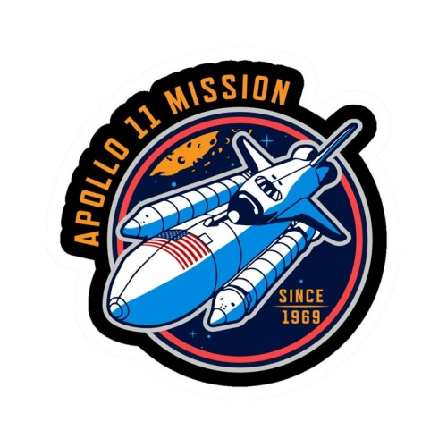
For more about Apollo_11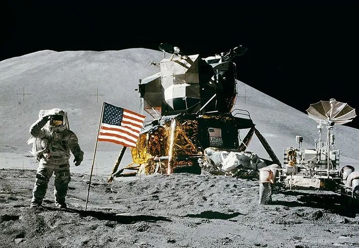
Apollo_11: The first human successful moon landing into another celestial habitat
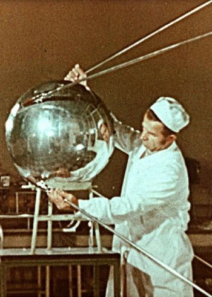
Sputnik1: First artificial satellite, devoloped in Soviet Union, marking the first landmark of the human space exploration
2. Sputnik(1957)
Sputnik 1 was the world’s first artificial satellite, launched by the Soviet Union in 1957. It
orbited Earth and transmitted simple radio signals, marking the beginning of the Space Age.
The mission demonstrated orbital technology, triggered the space race, and transformed
science, communication, and global geopolitics permanently.
For more information about the sputnik_1 space mission, click on the below given link~
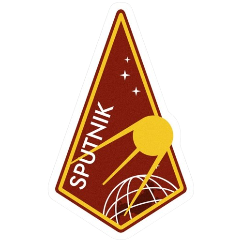
For more about sputnik_1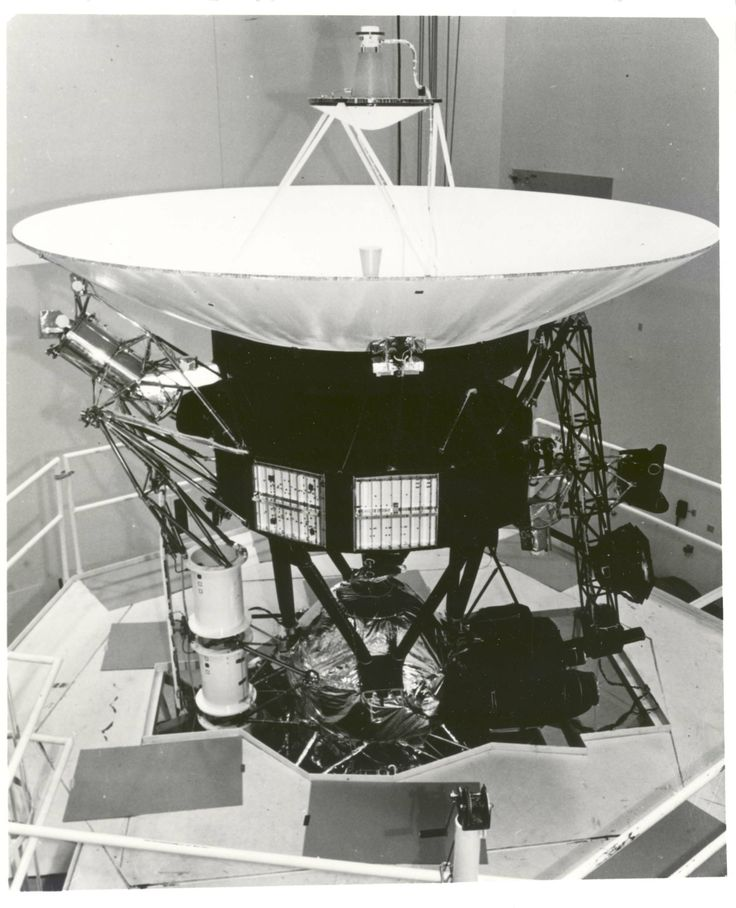
Second voyager for the findings of curiosity in the
deep-vast universe and galexies
3. voyager1 and 2(1977)
Voyager 1 and Voyager 2 are twin NASA probes launched in 1977 to explore the outer planets of
our solar system. They provided groundbreaking data on Jupiter, Saturn, Uranus, and Neptune,
revealing detailed images, rings, moons, and magnetic fields. Voyager 1 later entered
interstellar space, becoming the farthest human-made object. Both spacecraft carry the Golden
Record, a message representing humanity to any potential extraterrestrial civilizations.
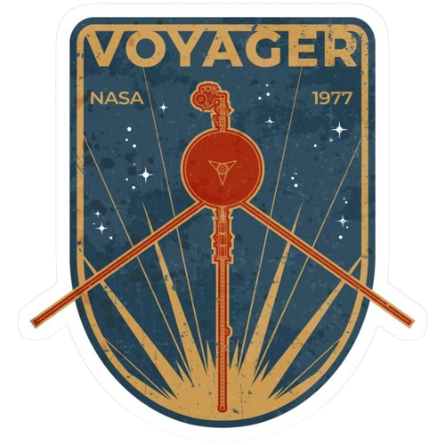
For more about voyagers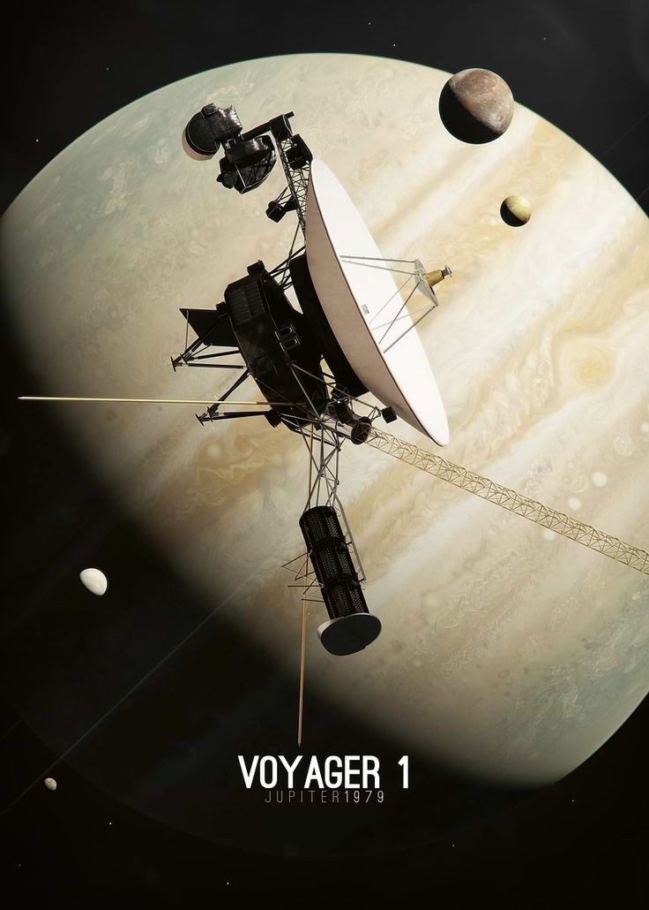
The voyager for the findings of curiosity in the deep-vast
universe and galexies
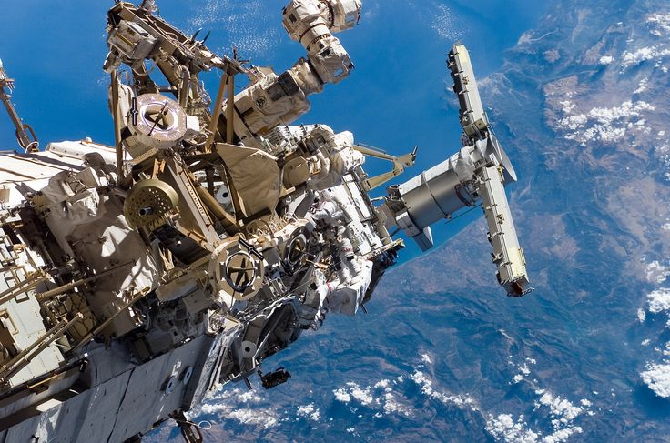
A continuously inhabited orbital laboratory enabling long-term human
spaceflight research and international cooperation
4. International Space Station(1998)
The International Space Station (ISS) is a permanently inhabited space laboratory orbiting
Earth since 1998. It is a joint project of NASA, Roscosmos, ESA, JAXA, and CSA, symbolizing
global cooperation in space. Astronauts conduct experiments in microgravity related to
biology, physics, medicine, and technology. The ISS has greatly advanced understanding of
long-duration human spaceflight and supports future missions to the Moon and Mars.
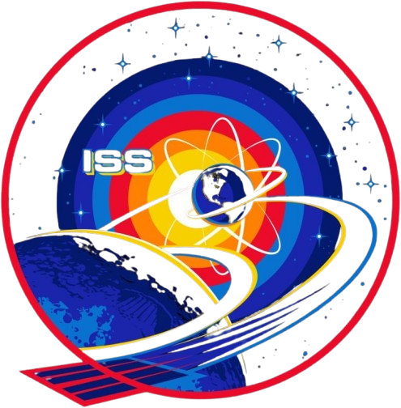
For more about International Space Station
5. Hubble Space Telescope (1990–present)
The Hubble Space Telescope, launched in 1990, is a space-based observatory that transformed
modern astronomy by capturing extremely clear images beyond Earth’s atmosphere. It has helped
determine the age of the universe, discover distant galaxies, study black holes, and observe
stellar birth and death. Hubble’s long service life and precise instruments have made it one
of the most scientifically productive space missions in history.
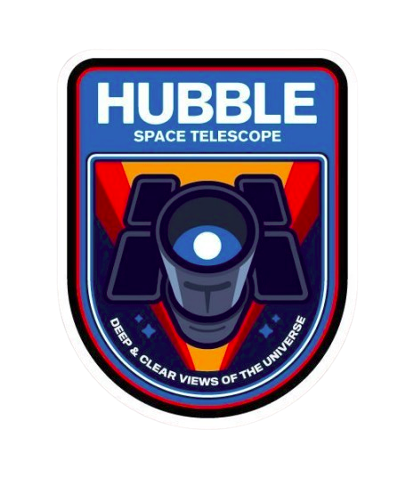
For more about Hubbles space telescope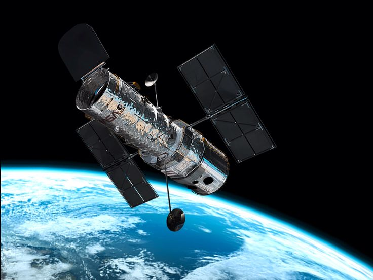
A constantly wandering telescope throughout the vast space. A telescope that captures various images
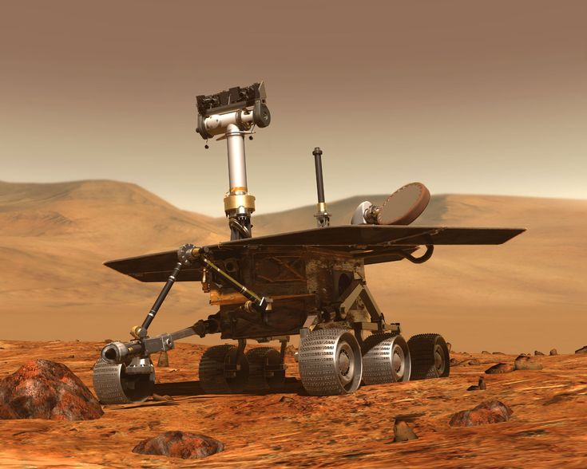
Mars rover, named as the "sojourner".
6. Mars Pathfinder and sojourner(1997)
Mars Pathfinder was a NASA mission launched in 1996 that successfully landed on Mars in 1997,
demonstrating a low-cost method for planetary landing. It carried Sojourner, the first rover
to operate on another planet, which analyzed rocks and soil and transmitted images. The
mission proved rover mobility on Mars and laid the technological foundation for future, more
advanced Mars exploration missions.
There the name of the mission was kept as the "Mars pathfinder" and the name of the rover was
kept as the "sojourner"
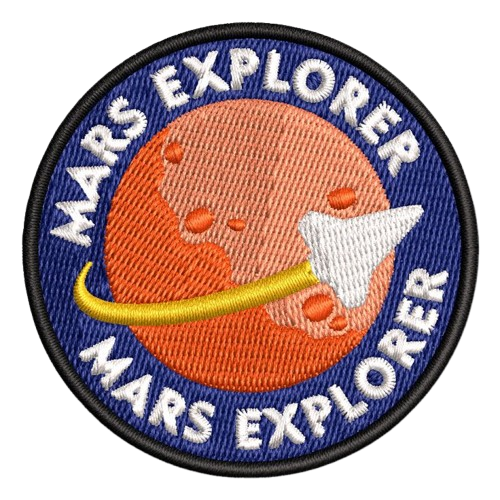
For more about Mars pathfinder space mission
7. Mars Curiosity Rover (2011–present)
The Mars Curiosity rover is a car-sized robotic laboratory launched by NASA in 2011 and
landed on Mars in 2012 inside Gale Crater. Powered by a nuclear generator, Curiosity studies
Martian geology, climate, and chemistry to assess whether Mars ever had conditions suitable
for life. It discovered evidence of ancient water, organic molecules, and a once-habitable
environment, making it one of the most scientifically significant Mars missions ever.
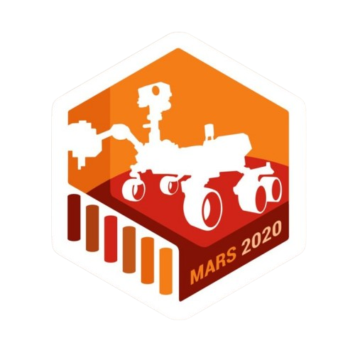
For more about Mars Curiosity space mission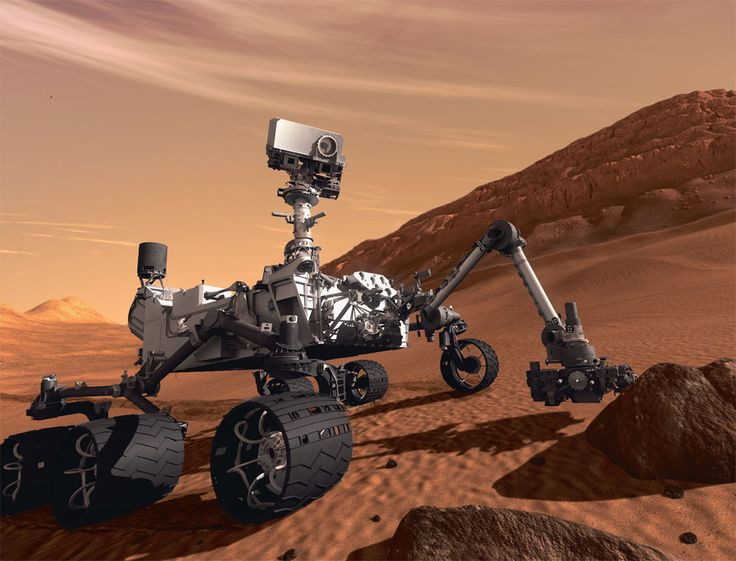
A nuclear-powered rover that confirmed Mars once had conditions suitable for microbial life.

The most advanced space telescope ever built, observing the universe’s earliest galaxies and exoplanet atmospheres.
8. James Webb Space Telescope(2021-present)
The James Webb Space Telescope (JWST), launched in 2021, is the most advanced space observatory
ever built, designed to observe the universe in infrared light. It studies the formation of the
first galaxies, stars, and planetary systems, and analyzes exoplanet atmospheres for potential
signs of life. With its large segmented mirror and extreme sensitivity, JWST is transforming our
understanding of cosmic origins and the evolution of the universe.
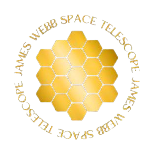
For more about James webb space telescope
9. Chandrayaan3
Chandrayaan-3 was India’s 2023 lunar mission designed to demonstrate safe and precise
soft-landing technology on the Moon. It successfully landed near the lunar south pole,
making India the first nation to achieve this feat. The mission included a lander and
rover that conducted in-situ experiments on lunar soil, temperature, seismic activity,
and plasma environment, significantly advancing India’s technological capability and
scientific understanding of the Moon.
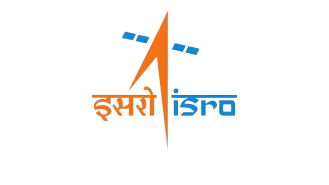
For more about Chandrayaan_3 space mission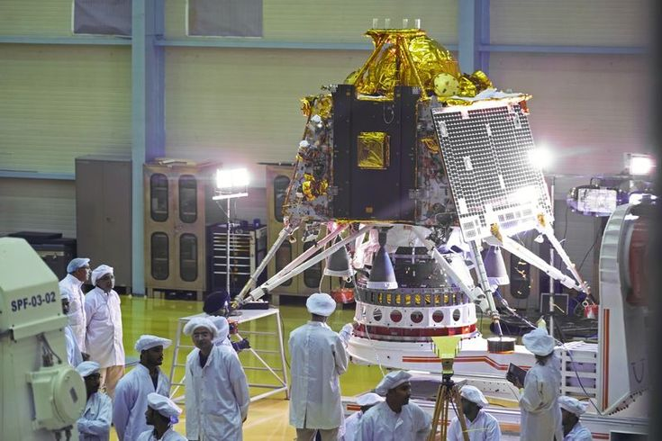
Chandrayaan3; vikram lander construction scene. Being built inside of the
main ISRO headquarters.
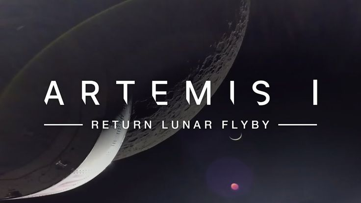
Artemis_1; The first mission of NASA’s Artemis program, testing
deep-space systems for returning humans to the Moon and eventually
reaching Mars.
10. Artremis 1(2022)
Artemis I was NASA’s uncrewed test mission launched in 2022 to validate the Space Launch
System rocket and the Orion spacecraft for deep-space travel. The mission sent Orion into a
distant retrograde orbit around the Moon, testing navigation, heat shields, life-support
systems, and reentry performance. Artemis I marked the first major step toward returning
humans to the Moon and establishing a sustainable lunar presence for future Mars missions.
Astrophysics and Aerospace Engineering
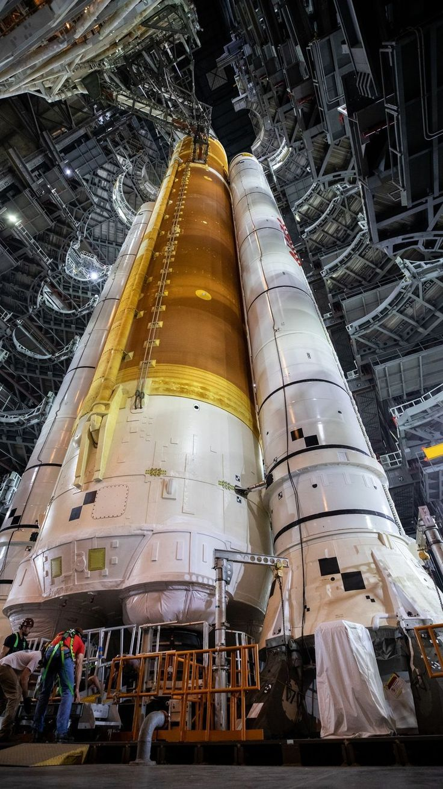
Astrophyics and Aerospace Enigineering are two closely connected scientific fields that together drive humanity’s exploration and understanding of space. Astrophysics focuses on studying celestial objects and phenomena such as stars, galaxies, black holes, dark matter, and the origin and evolution of the universe, using principles of physics, mathematics, and observational data from telescopes and space missions. It seeks to answer fundamental questions about how the universe works at both the largest and smallest scales.
Aerospace engineering, on the other hand, applies engineering principles to
design, develop, test, and operate aircraft, rockets, satellites, space probes, and spacecraft that make astrophysical
research possible. It is divided mainly into aeronautical engineering, dealing with flight within Earth’s atmosphere, and
astronautical engineering, dealing with spaceflight. Together, sir, astrophysics provides the scientific goals and
theoretical understanding, while aerospace engineering provides the practical tools and technologies needed to explore
space, enabling missions that expand human knowledge beyond Earth.
These 2 subjects are 2 of the most important aspects that makes those personalities capabale of being
scientists and engineers who would expand this kingdom.
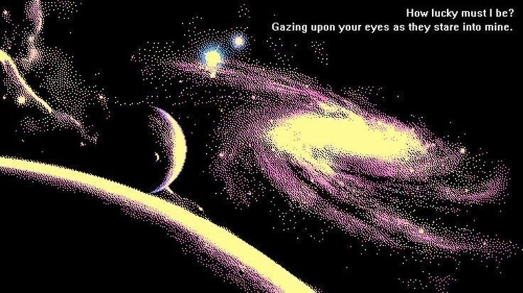
The Universe's glowing Energy State
universe’s glowing energy state is Plasma that constiutes the beginning
of this known universe. Its the current fundamental matter of this known existence that was the first orginal matter.
Plasma is the fourth fundamental state of matter, formed when a gas is energized so strongly that electrons
are stripped from atoms, creating a mixture of free electrons and positively charged ions. Unlike solids,
liquids, and gases, plasma conducts electricity, responds to magnetic fields, and exhibits collective
behaviors driven by electromagnetic forces. It is the most abundant state of visible matter in the universe,
making up stars, the Sun, nebulae, and the interstellar medium. On Earth, plasma appears naturally in
lightning, auroras, and flames, and artificially in devices such as neon signs, plasma TVs, and fusion
reactors. Because of its unique properties, plasma plays a crucial role in advanced technologies, including
semiconductor manufacturing, surface treatment, medical sterilization, and space propulsion. Scientifically,
plasma physics helps us understand cosmic phenomena and supports efforts toward controlled nuclear fusion, a
potential source of clean, nearly limitless energy for the future of human civilization advancement.
"Its not fire or anything, its just 'plasma' of highly vharged particles"
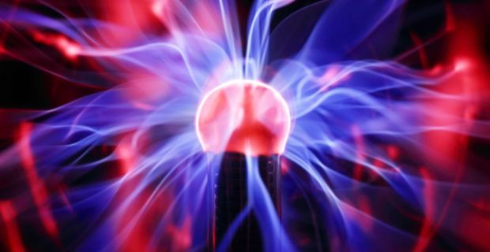
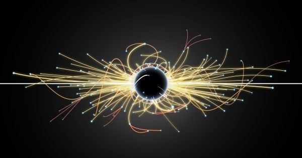
Theme of the celestials web-world
Theme of this celestials web world is to drive intot the fundamentals of space exploration and the level of
human
acheivement. And the main apsect for is to show you the wonders of our Solar System
This site hasn't ended yet but the main picture are waiting for you to be seen out :).
Below here would be the nav section for the other sites of the
Celestials Web-world.
Celestialss's Nav Portal
Welcome and this here is the main portal navigation for the other sites of the "Celestials web-world".
The respected given links would take to the visuals of the "Celestial bodies" of our solar system:
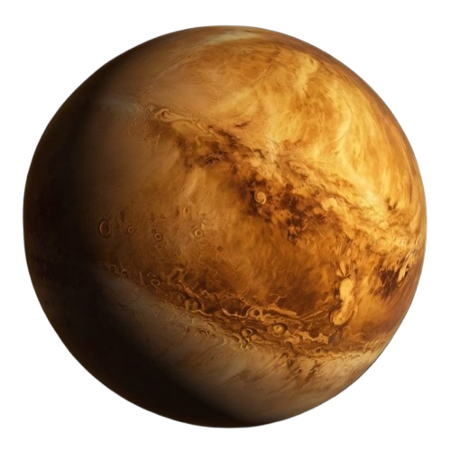
Celestials; Venus
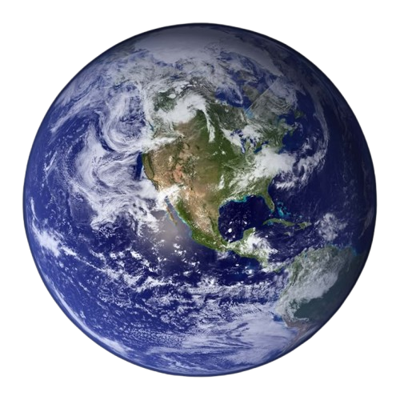
Celestials; Earth
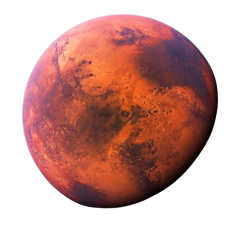
Celestials; Mars
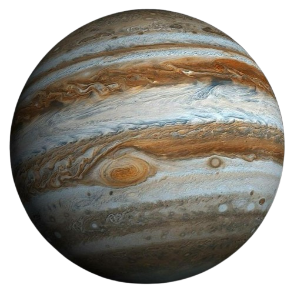
Celestials; Jupiter
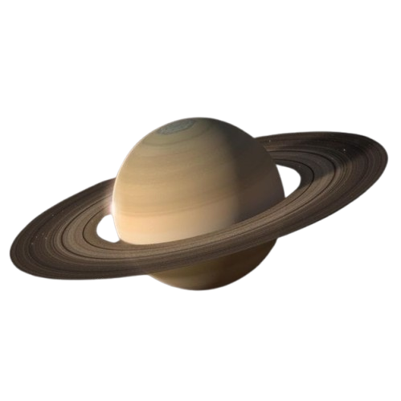
Celestials; Saturn
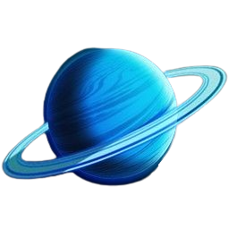
Celestials; Uranus
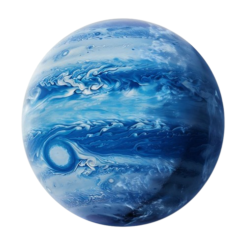
Celestials; Neptune
the Solar System is a vast gravitational system centered around the Sun, a massive star that provides
light and energy to all its members, consisting of eight planets—Mercury, Venus, Earth, Mars, Jupiter,
Saturn, Uranus, and Neptune—along with their moons, dwarf planets like Pluto, asteroids, comets, and
meteoroids, all bound by the Sun’s strong gravitational pull, where the inner planets are rocky and
dense, the outer planets are gaseous or icy giants, and countless smaller bodies occupy regions such as
the asteroid belt and the Kuiper Belt, making the Solar System a dynamic and evolving structure that
reveals important clues about the origin and nature of the universe.
For more information and facts about solar system, click on this given link below